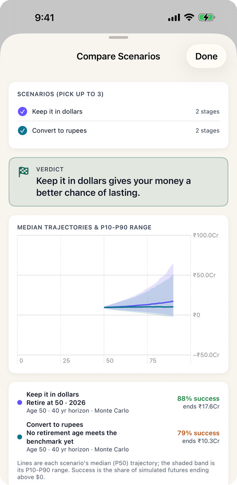
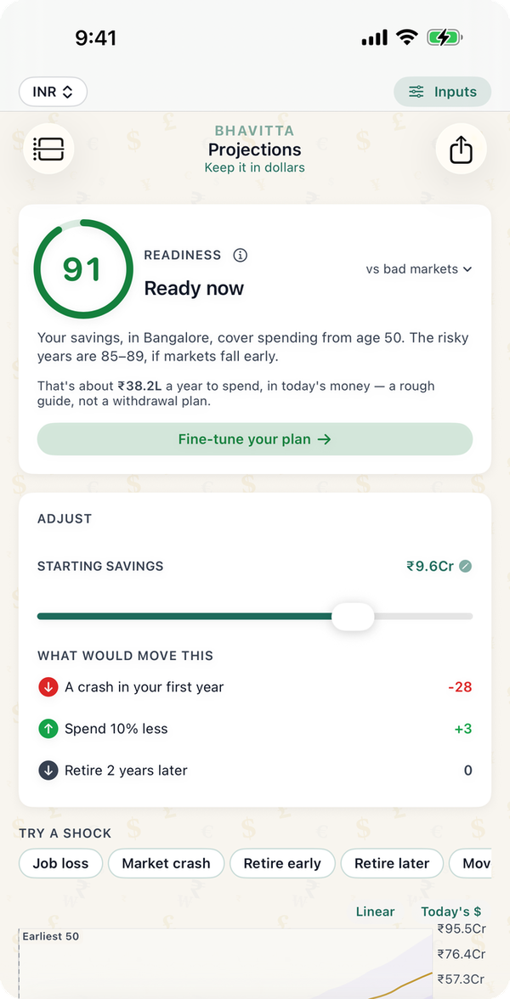

"How much do I need to move back?" comes up constantly among NRIs in the US, and it is harder than the usual retirement question because two currencies are involved. Your savings earn in dollars, your life costs rupees, and the exchange rate moves between them every year. The tables below come from Bhavitta's own engine, the same one the app runs, for a couple who stop working and move to Bangalore with a dollar portfolio. Each figure is the smallest corpus, in $25,000 steps, that lasts to 90 in at least 80% of simulated market paths.
How much do you need to move back at 45, 50 or 55?
With cautious returns: the app's default Monte Carlo setting for a dollar portfolio, 7% a year on average with 12% volatility, 10,000 trials. Spending is in today's rupees.
| Monthly spending | Move at 45 | Move at 50 | Move at 55 |
|---|---|---|---|
| ₹1.5 lakh | $650k | $600k | $575k |
| ₹2.5 lakh | $1.05M | $975k | $925k |
| ₹4 lakh | $1.65M | $1.55M | $1.45M |
With US market history: the app's Historical setting, which replays every stretch of US market returns since 1928.
| Monthly spending | Move at 45 | Move at 50 | Move at 55 |
|---|---|---|---|
| ₹1.5 lakh | $375k | $350k | $350k |
| ₹2.5 lakh | $625k | $575k | $575k |
| ₹4 lakh | $975k | $925k | $900k |
The gap between the two tables is the honest range. History has been generous to US stocks; a planner who wants a margin of safety uses the first table. In both, the corpus works out to a first-year withdrawal of about 3.5% on cautious returns and 6% on history.

Why does a falling rupee help?
Your costs are in rupees. If the rupee loses 3% a year against the dollar, as it has on average for the last decade, then each year a dollar buys more rupees and Bangalore's 5% inflation feels like about 2% in dollar terms. The dollar corpus needed at 50 on ₹2.5 lakh a month, by how fast the rupee falls:
| Rupee falls each year | Cautious returns | US market history |
|---|---|---|
| 0% (rupee holds) | $1.65M | $825k |
| 2% | $1.15M | $650k |
| 3% (the app's default) | $975k | $575k |
| 4% | $850k | $525k |
| 5% | $750k | $500k |
This is the single biggest assumption in an NRI plan. If the rupee held steady for 40 years, the cautious figure would rise by two-thirds. The app lets you set the rate yourself in Inputs.
Keep it in dollars or convert to rupees?
The same couple at 50 on ₹2.5 lakh a month, with the money either left in a dollar portfolio or converted at ₹86 on arrival and invested in rupees (the app's Balanced India preset: 9.5% a year, 13% volatility, no currency effect). Chance of lasting to 90:
| Savings | Dollars, cautious | Dollars, history | Converted to rupees |
|---|---|---|---|
| $1M (₹8.6 Cr) | 82% | 96% | 71% |
| $1.5M (₹12.9 Cr) | 97% | 100% | 93% |
| $2M (₹17.2 Cr) | 99% | 100% | 98% |
On these defaults the dollar portfolio wins because 7% returns against roughly 2% dollar-terms inflation leaves a wider margin than 9.5% against 5% in rupees. That conclusion rests entirely on the rupee continuing to fall about 3% a year; at 0% the two are much closer. Many people who move back hold some of each, and the app can model both as separate plans.

What about US Social Security?
If you have enough US work credits, Social Security can be paid to you in India. The dollar corpus needed at 50 on ₹2.5 lakh a month, with a benefit starting at 67:
| Social Security from 67 | Cautious returns | US market history |
|---|---|---|
| None | $975k | $575k |
| $12,000 a year | $850k | $550k |
| $24,000 a year | $700k | $500k |
What the numbers assume
- A couple with no further income after the move: no salary, rent, pension or annuity unless stated.
- Monthly spending in today's rupees at Bangalore's 5% inflation. Health insurance comes on top: ₹40,000 a year today, rising 10% a year in rupees.
- Rupee depreciation of 3% a year against the dollar, the app's default (the rupee fell about 2.7% a year over the last decade and about 4.5% a year since 1990).
- Exchange rate of ₹86 to the dollar today.
- Survival means the balance stays above zero in every year to 90.
- No tax in either country, and no currency-conversion costs. Both matter for NRIs: Indian tax residency, the RNOR period after you return, US tax for citizens and green-card holders, and how India taxes foreign funds can all change what you keep.
Common questions
How much money do I need to move back to India from the US?
For a couple retiring to Bangalore at 50 on ₹2.5 lakh a month, about $975,000 for an 80% chance of lasting to 90 on cautious 7% returns, or $575,000 if US markets repeat their history. On ₹1.5 lakh a month it is $600,000 (or $350,000).
Is $1 million enough to retire in India?
For a couple spending ₹2.5 lakh a month from 50, yes: $1 million kept in dollars lasts to 90 in 82% of paths on cautious returns and 96% on US market history. Converted to ₹8.6 crore and invested in rupees it is 71%. On ₹4 lakh a month you would need about $1.55 million.
Should I convert my US savings to rupees when I move back?
On the app's defaults, keeping the money in dollars gave the better chance (82% vs 71% on $1 million), because a rupee falling 3% a year makes Indian costs cheaper in dollar terms. If the rupee stopped falling the advantage would shrink. This is a modelled comparison, not a recommendation; tax and fund rules differ by person.
How does rupee depreciation affect an NRI retirement plan?
A faster-falling rupee lowers the dollar corpus you need, because your rupee costs take fewer dollars each year. For ₹2.5 lakh a month from 50, cautious returns need $1.65 million if the rupee holds steady, $975,000 at 3% a year and $750,000 at 5% a year.
Can I get US Social Security if I retire in India?
US Social Security is generally payable to US citizens living in India, and a benefit lowers what your savings must cover. In the model, $24,000 a year from 67 cuts the cautious corpus for ₹2.5 lakh a month from $975,000 to $700,000. Check your own eligibility with the Social Security Administration.
Run your own number
- Keep the currency on USD for a dollar portfolio, or switch the display to INR to see it in rupees.
- On My Plan, add a Move to your Indian city at the age you plan to go back. Set your own yearly spending on the city stage if you know it.
- In Inputs, set the rupee depreciation rate you believe, and add Social Security and India Health insurance from "Add a life event".
- Copy the plan, change one thing (the year you move, the city, rupees instead of dollars) and tap Compare. The Bangalore at 50 vs staying in Seattle example walks through the whole decision.
Find your own number
Free on iPhone and Android. No account; your plan never leaves your phone.